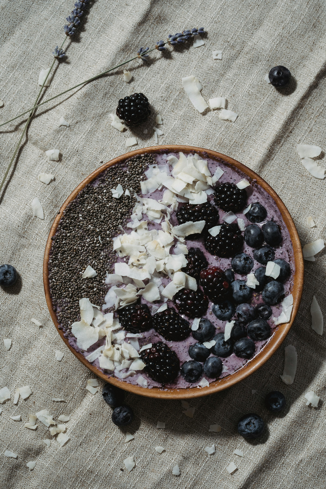

Chia Pudding with Almond Butter and Berries

Creamy chia pudding topped with almond butter and fresh
berries.
American Vegan, Keto/Paleo Friendly recipe
Ingredients
- 1/4 cup chia seeds
- 1 cup unsweetened almond milk
- 2 tablespoons natural almond butter
- 1/2 teaspoon vanilla extract
- 1-2 tablespoons maple syrup (optional, for sweetness)
-
1/4 cup mixed berries (blueberries, raspberries, or blackberries)
- Pinch of salt
- Optional: chopped almonds for crunch
Instructions
-
In a bowl, whisk together chia seeds, almond milk, vanilla extract,
and a pinch of salt.
- Add maple syrup if desired for sweetness and whisk again.
-
Let the mixture sit for 5 minutes, then whisk again to prevent
clumping.
-
Cover and refrigerate for at least 4 hours or overnight until thick
and pudding-like.
-
When ready to serve, stir the pudding and divide into serving bowls.
- Top each serving with a dollop of almond butter.
- Add fresh berries and chopped almonds if desired.
-
Serve chilled. Can be stored in refrigerator for up to 3 days.